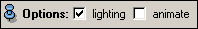

Ports
ColorMode
If the line set object contains additional data values per vertex this menu allows you to select one such variable which will be used to look up vertex colors. If No Color has been selected the lines will be displayed in uniform default color. This color may be changed using the default (Constant) color setting of the colormap above. The mode DEC is used to color the lines based on the direction of each segment. Directionally encoded colors are used to illustrate the orientation in dense fiber bundles by mapping the spatial x-direction to red, the spatial y-direction to green, and the z-direction to blue.

Options

Fade Factor
Transparency
Base transparency of the line segments.